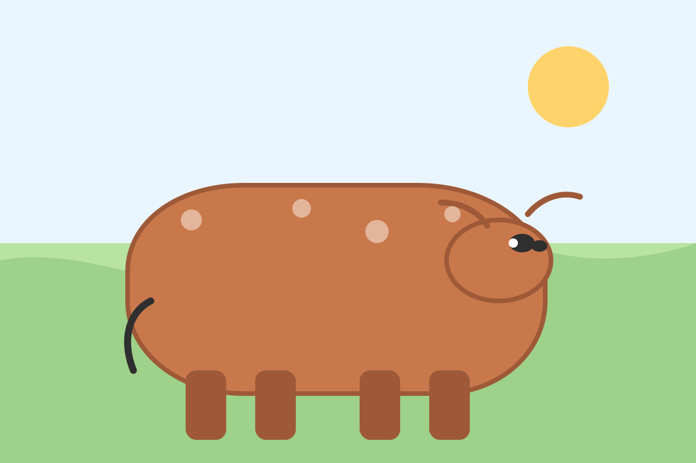

Người nông dân quay lại Amway ở tuổi 42
Cô là một người nông dân. Cuộc sống trải qua nhiều nghề từ phụ hồ, làm nông, nuôi bò… Khi tìm hiểu Amway, cô cảm nhận đây là một mô hình rất tốt, nhưng có lẽ chỉ dành cho cô giáo, dân văn phòng, bác sĩ, y tá… Còn mình thì không đủ giỏi, không đủ điều kiện, không đủ khả năng. Rồi cô rời đi.
UL dần dần nghỉ hết. Cuộc sống quay lại với cơm áo gạo tiền. Nhưng có một điều: dù đi đâu, làm gì, trong đầu cô luôn có Amway. Suốt gần 10 năm, cô vẫn giữ thẻ, năm nào cũng gia hạn. Dù đi từ nhà lên trung tâm phân phối rất xa, mỗi năm chỉ đủ tiền mua sản phẩm đúng một lần, cô vẫn đi. Trong lòng luôn có một niềm tin là Amway tốt.
Rồi cô nghe tin UL cũ từ Platinum lên Diamond. Nhìn UL thay đổi, xinh đẹp hơn, thành công hơn, cô mới giật mình: “Amway không phá sản. Chỉ là mình bỏ cuộc.” Năm 42 tuổi, cô quay lại.
UL rủ rất nhiều lần, nhưng cô luôn hẹn tháng sau vì… không có tiền và ngại. Đến khi đi rồi, cô thấy những người từng làm cùng mình năm xưa giờ đều đã thành công. Ai bỏ thì bỏ. Ai không bỏ thì đã thành công.
Muốn đi hội thảo nhưng không có tiền, cô bán luôn một con bò để đi. Đi hết… con bò. Hai vợ chồng ngồi dưới hội trường, nhìn thấy cả người đi xe lăn vẫn làm được. Cô nghĩ: “Người ta như vậy còn làm được, thì mình không có lý do gì nói là không làm được.”
“Dùng sức của mình nhưng dùng tư duy của UL để làm việc.”
Khi đã hạ quyết tâm, cô không còn nghe thấy lời từ chối nữa. Ai không làm thì thôi, tui đi tiếp.
Những ngày đầu, sản phẩm của cô chỉ là nước rửa chén, kem đánh răng. Sau khi đi minh họa, hiểu về sản phẩm, cô quyết định mua máy lọc nước. Không có tiền, cô bán 4 con bò ở nhà với suy nghĩ:
- 🐄 “Bò phải cắt cỏ, cho ăn, trông coi. Nó không tự sống được.”
- 💧 “Còn máy lọc nước, đem ra minh họa mỗi ngày. Mỗi tháng nó ‘đẻ’.”
Cô theo sát UL, không cần UL phải theo sát mình.
- 👉 4 tháng lên 21%.
- 👉 11 tháng lên Platinum.
- 👉 Năm thứ 2 đạt FDD.
- 👉 Năm thứ 6 đạt EMR.
Ngày xưa làm Amway, ước mơ lớn nhất của cô chỉ là mua được một chiếc xe cũ. Còn bây giờ, cô nói: “Những gì tui có hôm nay đã vượt xa tất cả những gì tui từng dám mơ.”
Cô tự nhìn lại mình: Nhà quê. Học hành không cao. Chồng làm phụ hồ, hay nhậu. Không tiền. Không mối quan hệ. Không lợi thế. Cô nói: “Tui không có gì hết, chỉ có một trái tim không chịu thua.”
Nghe thêm: Podcast chia sẻ câu chuyện.
Nguồn hình: Minh họa được thiết kế cho bài viết.